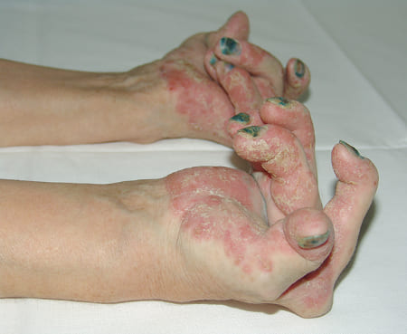
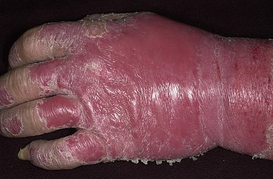
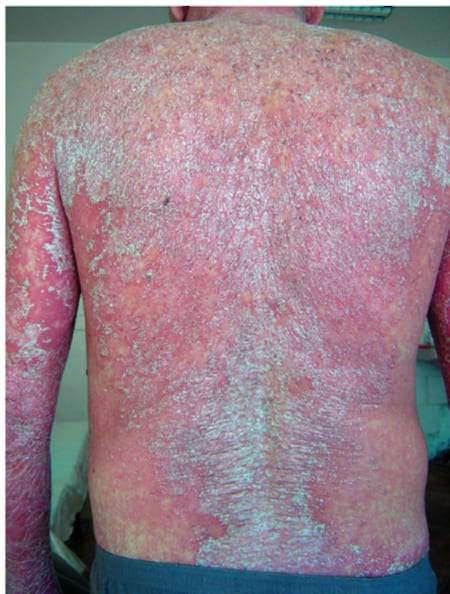

De los editores: La psoriasis es una de las patologías de la piel más comunes; dato confirmado por las estadísticas e investigaciones epidemiológicas. Se ha descubierto que aproximadamente 250 millones de personas en todo el mundo sufren de psoriasis. En nuestro país, esta cifra es de aproximadamente 1 millón de personas afectadas. La psoriasis es un problema autoinmune grave que amenaza la vida. Hemos discutido la situación con de este problema en Guatemala y lo que los pacientes pueden esperar con experto Andrés Martínez, certificado en Cosmetología.
Bueno, escribí una monografía que llamé « Psoriasis. La estrategia de combate », por lo que puedo hablar de los peligros del problema conforme pasa el tiempo, pero seré lo más breve posible. Actualmente, la psoriasis es realmente una de los problemas cutáneos más peligrosos. Aparte de desfigurar la apariencia física de una persona y hacer que la vida sea mucho menos placentera, causa diversas complicaciones. Con todo, el problema reduce la esperanza de vida de una persona entre un 20 % a 30 %. Significa que las personas afectadas por la psoriasis viven en promedio 15-20 años menos.
La psoriasis casi siempre implica la coexistencia de problemas. Esta condición se llama patología comórbida. Las personas afectadas por la psoriasis tienen 2-3 veces más posibilidades de desarrollar el problema aterosclerótico cardiovascular, accidentes cerebrovasculares, hipertensión primaria, dislipidemia, diabetes y el problema de Crohn.
Para darle una mejor idea de lo que estoy hablando, aquí hay varias fotos tomadas por los expertos de nuestra Fundación.
Una deformación irreversible de las articulaciones de la mano de una mujer de 26 años de edad (los síntomas de la artritis inducida por la psoriasis):

La mano de un hombre de 35 años de edad, afectada por una eritrodermia psoriásica agravada:

Un hombre de 27 años de edad que recurrió a nosotros demasiado tarde (falleció):

Para ser honesto, hay una falta de esfuerzo coordinado, y la mayor parte de los trabajos destinados a mejorar el problema de la psoriasis, es realizada por algunos expertos que trabajan en los centros de investigación. La mayoría de los centros no tienen ningún programa de investigación que a veces puede ser ineficaz.
La Fundación para la Piel y yo personalmente sin duda estamos haciendo nuestro mejor esfuerzo para hacer cambios y ayudar a nuestros pacientes. A pesar de nuestros recursos limitados, ponemos mucho esfuerzo para mejorar la situación con del problema en todo el país. Recientemente, hemos firmado un acuerdo para unirnos al proyecto internacional «Antipsoriasis». Esto nos ha ayudado a tener acceso al primer producto desarrollado en el marco del proyecto « contra la psoriasis ». En la actualidad, es el único producto realmente eficaz de para resolver el problema de la psoriasis.
« contra la psoriasis» es útil en el 93 % de los casos, en los que elimina totalmente las manifestaciones de psoriasis y recupera la piel. Además, reactiva el sistema inmunológico del cuerpo, lo que prácticamente borra la causa del problema. Esto significa que la crema puede hacer que su piel se vea normal, elimina la causa del problema y evita una recaída.
Actualmente, este es el producto cosmético más eficaz contra la psoriasis y está disponible en el mercado mundial. La única alternativa posible son los cursos de uso integral que se ofrecen en los centros especializados privados. « contra la psoriasis» es por 40-50 veces menos costoso y su eficacia es al menos igual.
Actualmente, el cosmético es muy demandado debido a su eficacia. Anteriormente, no estaba disponible en el mercado nacional, ya que estaba completamente reservado para los países que participaron en el proyecto «Antipsoriasis». Cuando nos unimos al proyecto, fue posible iniciar el suministro de « contra la psoriasis» para Guatemala.
Cualquier persona puede hacer un pedido en este momento y comprar la crema para una aplicación individual. La entrega se realiza por correo o mensajería de servicio (el pago se realiza a la entrega). La aplicación de la crema no requiere asistencia adicional. Por lo tanto, el cosmético puede ser utilizado por cualquier persona.
Quiero decir que cada persona tiene que preocuparse por su salud. La psoriasis es un problema muy peligroso. Por lo tanto, es muy importante comenzar a resolver el problema antes de que sea demasiado tarde. Imagínese, ¡USTED PUEDE RESOLVER EL PROBLEMA DE LA PSORIASIS AQUÍ Y AHORA MISMO! ¿No sería decepcionante perder una oportunidad así?
P. D.: el experto Andrés puso una opción especial a disposición de los visitantes de nuestra página web, ¡lo que significa que se puede ordenar « contra la psoriasis» con un 50 % de descuento adicional!
La entrevista fue realizada por Daniel García.
Silvia -
Pedí esta crema, y después de 4 semanas de uso, me siento absolutamente saludable a pesar de haber sufrido de psoriasis por 5 años.
Rosa -
¡Muchas gracias! En cuanto a mi experto de cabecera, no es útil en absoluto. Una vez me encontré con este cosmético y lo ordené. ¡Es muy barato y muy eficaz! ¡Gracias de nuevo!
Dolores -
Estuve visitando regularmente a mi experto, pero no me ayudaba en absoluto. Mi piel estaba poniéndose cada vez peor, y mis articulaciones comenzaron a dolerme. Un amigo mío me habló de « contra la psoriasis ». Para ser honesta, no confié en lo que me dijo. Sin embargo, lo pedí. Después de un mes de usar la crema, no sentía más dolor en las articulaciones. Ahora, estoy en la séptima semana de usar la crema y mi piel está cada vez más y más limpia. ¡Creo que en un par de semanas no habrá más signos del problema! :)
Juliana -
¡Gracias por su comentario! También yo pedí esta crema y, con suerte, me ayudará.
Miguel_00 -
Yo también ordené la crema, me prometieron que recibiría la entrega en una semana. Así que estoy esperando a que llegue.
Diana -
Quiero expresar mi agradecimiento a los que han puesto esta crema a nuestra disposición para comprarla en Guatemala. Creo que he intentado todo lo posible para para resolver el problema de la psoriasis. ¡Únicamente contra la psoriasis realmente me ayudó! ¡Muchas gracias!
Lucía Jiménez -
Recientemente he visto este en la televisión. Decían que finalmente ya estaba disponible el mejor cosmético del mundo contra la psoriasis.
Sandra -
Estoy de acuerdo con todo lo dicho anteriormente. ¡El único cosmético que realmente ayuda! Antes de empezar a usarlo, mi experto me recetó unas pomadas que empeoraron las cosas. ¡Esta crema realmente me ayudó!
Gabriela -
¡El descuento es increíble! Sufro de psoriasis también, así que pedí la crema. Espero que me ayude.
Martha -
¿No es una estafa? ¿Por qué se vende solo en línea?
María Cardenas -
Martha, creo que en verdad no has leído la entrevista. Se vende en línea porque de otro modo las farmacias lo venderían a precios absurdos. Por otra parte, existe la opción de pagar al recibir, lo que significa que puedes examinar lo que compras y revisarlo antes de pagar. Además, hoy en día, todo se vende en línea, desde la ropa hasta la línea blanca y los muebles.
Martha -
No me di cuenta de la opción de cobro a la entrega en el sitio web. Si es cierto, entonces no hay nada de qué preocuparse. Voy a hacer un pedido ahora.
Angel -
¡Gracias por una entrevista tan interesante!
Carmen -
Me uno a las recomendaciones. ¡La última vez que me sentí tan bien fue hace tres años! No pueden imaginar lo feliz que estoy por ya no estar asustada de mostrar mi cara de nuevo :)
Monica -
Lo pedí para mi marido, ya que ha sufrido de psoriasis por tres años seguidos. Se pudo notar el resultado en solo una semana. Él ahora está brillando de felicidad. Es tan diferente de aquel rostro sombrío que tenía siempre.
Marco Ortiz -
Gracias por el consejo. ¡Espero con ansias recibir la crema!
Cecilia -
¡He leído todos sus comentarios y me di cuenta de que tenía que hacer un pedido!
|
||
|
||
|
||
|